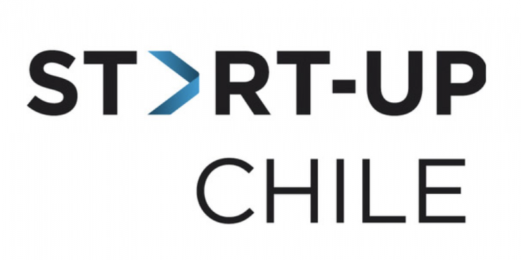

Gigante estadounidense Viacom compra Chilevisión a Warnermedia y refuerza su presencia en Latinoamérica |
|---|
| Hasta el 9 de abril de 2021 se podrá postular al #CapitalSemilla2021, programa de Sercotec que te apoyará en el gran paso que es emprender. Serctoc abrió las postulaciones a Capital Semilla 2021, al cual podrás postular hasta el 9 de abril. El proceso es en línea en www.sercotec.cl. Capital Semilla es un fondo concursable que apoya la puesta en marcha de nuevos negocios con oportunidad de participar en el mercado. Cofinancia un plan de trabajo destinado a implementar un proyecto de negocio. Este plan de trabajo incluye acciones de gestión empresarial (capacitación, asistencia técnica y acciones de marketing) e inversiones en bienes necesarios para cumplir el objetivo del proyecto. Si tienes dudas comunícate con tu #PuntoMipe regional vía telefónica o por correo electrónico para que te ayuden. Busca sus datos de contacto en el sitio www.sercotec.cl, menú “Nosotros, submenú “Mapa de oficinas” o directamente en https://www.sercotec.cl/mapa-de-oficinas/ (copia o transcribe el link). Para más información ingresa al siguiente link: https://www.sercotec.cl/capital-semilla-emprende/ | Fuente:URL WEB |
Semilla abre su convocatoria 2021 |
|---|
| Hasta el 9 de abril de 2021 se podrá postular al #CapitalSemilla2021, programa de Sercotec que te apoyará en el gran paso que es emprender. Serctoc abrió las postulaciones a Capital Semilla 2021, al cual podrás postular hasta el 9 de abril. El proceso es en línea en www.sercotec.cl. Capital Semilla es un fondo concursable que apoya la puesta en marcha de nuevos negocios con oportunidad de participar en el mercado. Cofinancia un plan de trabajo destinado a implementar un proyecto de negocio. Este plan de trabajo incluye acciones de gestión empresarial (capacitación, asistencia técnica y acciones de marketing) e inversiones en bienes necesarios para cumplir el objetivo del proyecto. Si tienes dudas comunícate con tu #PuntoMipe regional vía telefónica o por correo electrónico para que te ayuden. Busca sus datos de contacto en el sitio www.sercotec.cl, menú “Nosotros, submenú “Mapa de oficinas” o directamente en https://www.sercotec.cl/mapa-de-oficinas/ (copia o transcribe el link). Para más información ingresa al siguiente link: https://www.sercotec.cl/capital-semilla-emprende/ | Fuente:URL WEB |
START-UP CHILE PONE EN MARCHA NUEVA ESTRATEGIA Y LANZARÁ TRES CONVOCATORIAS SIMULTÁNEAS EN ABRIL |
|---|
| Start-Up Chile realizará por primera vez el lanzamiento de tres convocatorias simultáneas el 20 de abril, para emprendedores de cualquier industria y país, según el grado de desarrollo de su empresa o idea. La aceleradora de Corfo reformuló en 2020 su estrategia y programas de apoyo a startups. Build sustituye a The S Factory (TSF), que estaba pensando para mujeres que estuvieran desarrollando startups; e Ignite reemplaza a Seed, que entregaba financiamiento por $25 millones y asesoría a startups con soluciones innovadoras en etapa de escalamiento. Growth, en cambio, se creó para complementar la oferta y dar apoyo a la fase de escalamiento. Con esta reformulación se busca acompañar a los emprendedores en todo el proceso de crecimiento de su negocio -antes llegaban sólo hasta etapas intermedias- y captar a más emprendedores en fases iniciales, pues al estar enfocado solo en mujeres se recibía a un grupo reducido. Build es el nuevo programa de pre aceleración. Entrega subsidios por $15 millones a emprendedores que tengan una idea inicial de negocio o empresa en etapa de prototipo y validación temprana para su primer acercamiento al mercado. Ignite, en tanto, es el programa de aceleración. Entrega hasta $50 millones a emprendedores que buscan validar comercialmente un producto funcional. “El ideal es que aquí la startup ya esté constituida, pero de todas maneras se pueden constituir a lo largo del programa”, explica la gerente de Start-Up Chile, María de los Ángeles Romo. Y Growth está enfocado en la etapa de escalamiento. Financia con $ 60 millones a emprendedores que ya tienen un producto o servicio en el mercado, tienen clientes y quieren crecer. “Los ayudamos a escalar su negocio a nivel internacional, a levantar capital y atraer talento sofisticado para complementar sus equipos”, comenta. Este año cuentan con un presupuesto de $5.500 millones para financiar los programas. La convocatoria estará abierta hasta el 11 de mayo, y habrá otro llamado triple entre agosto y septiembre. Romo adelanta durante abril lanzarán cápsulas informativas en sus redes sociales con el fin de “democratizar los conceptos más relevantes del ecosistema de innovación y emprendimiento”. Además, presentarán un libro digital con la historia de Start-Up Chile y su metodología. |  | Fuente:URL WEB |